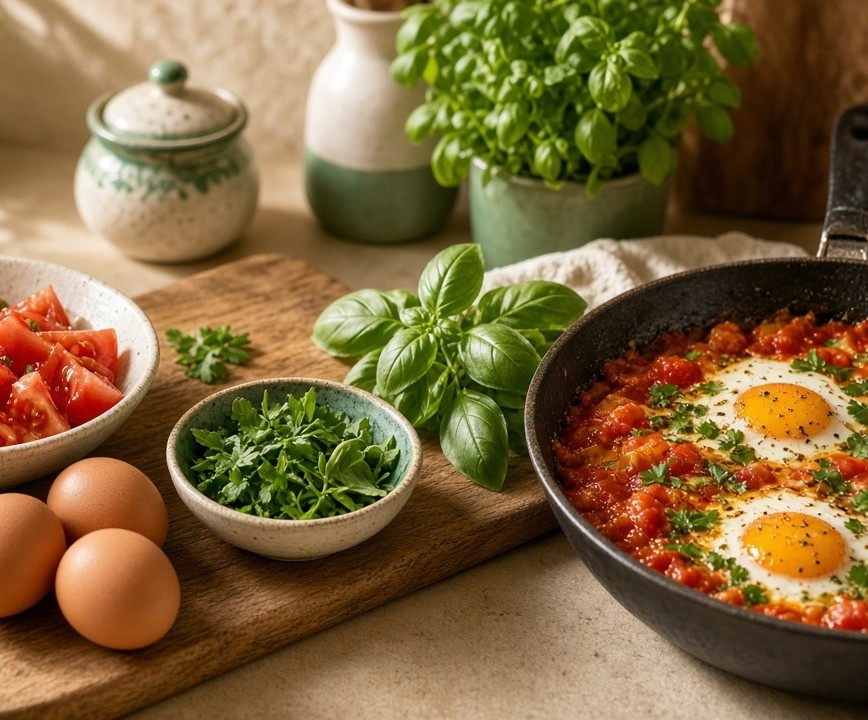

Kitchen-first recipes
Cook with what you already have.
Search hundreds of recipes by name, ingredient or course. Save your favorites and come back to them any time.
No account needed to browse Favorites after you log in

Browse by course
Start with the part of the meal you want to cook tonight.
How it works
Three short steps from a leftover ingredient to a saved favorite.
Search
Type a dish name or the ingredients in your kitchen, then pick a course.
Read the recipe
Check the ingredient list and follow clear, step-by-step instructions.
Save it
Log in and add recipes to your favorites so you can find them fast.
Keep the recipes you love
Create a free account to build your favorites list.